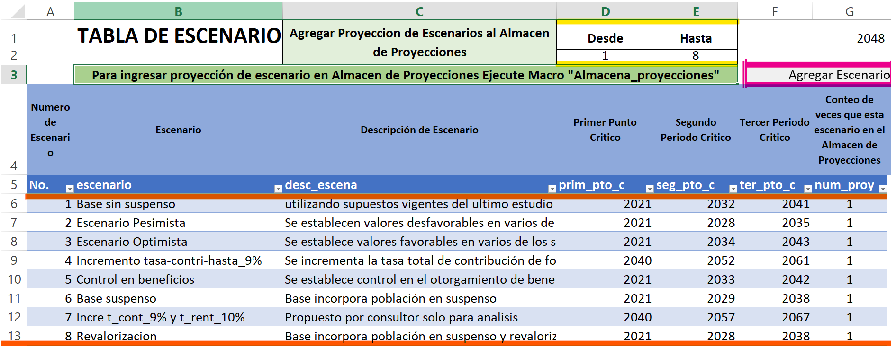

5 Escenarios
5.1 Creación de Escenarios [Creación Escenarios]
En esta sección se establece el conjunto de tablas que permiten modelar y establecer parámetros que simulan distintos tópicos dentro del régimen, estableciendo hipótesis o cambiando valores dependiendo del tipo de escenario que se desee plantear. Estas tablas interactúan entre sí con cada uno de los escenarios que se planteen y este se divide en dos tablas: la tabla de escenarios y la tabla de valores de supuestos por cada escenario.
5.1.1 Tabla de Escenarios
Los campos establecidos en esta tabla nos permiten agrupar los datos posteriores en el tipo de escenario establecido, a esta tabla se le llama “Tescenarios”.
[No.] Numero de Escenario, se va generando mediante una secuencia y diferente en cada caso.
[Escenario] tipo de escenario, escenario que se proyectará a esta tabla se le ha llamado “Lescenarios”
[desc_escena] Descripción de Escenario, en este espacio agregamos una descripción relevante del tipo de escenario.
[prim_pto_c] Primer Punto Crítico, año en el cual los ingresos corrientes que recibe el RSPS no son suficientes para cubrir los gastos y en este caso se recurre a los ingresos financieros.
[seg_pto_c] Segundo Punto Crítico, este es el año en que el total de los ingresos que recibe el RSPS no son suficientes para cubrir el gasto total del régimen y es necesario tomar recursos del patrimonio.
[ter_pto_c] Tercer Punto Crítico, año en que se ha consumido todo el patrimonio y ya no existen recursos para cubrir el déficit de ingresos para obtener el gasto total.
[num_proy] registra el Conteo de veces que esta un escenario en el almacén de proyecciones
Las celdas [Desde] y [Hasta] aquí establece el valor mínimo y máximo del número de escenarios que se han creado, esto servirá posteriormente para crear la proyección.
[Agregar_Escenario] este botón nos permite iniciar el proceso de proyección de flujos.

5.1.2 Tabla de Valores Supuestos Para Cada Escenario
En cada uno de los campos de esta sección se incluyen una gran variedad de parámetros, se le ha llamado a esta tabla “Tesena_supues” estos valores van a depender de la información de diversas fuentes como ser datos estadísticos y en su mayoría de la Ley del Seguro Social y sus Reglamentos. Estos valores a su vez van a cambiar con el tipo de escenario y supuesto que se establezca, eso lo veremos a detalle a continuación.
Escenarios que se establecieron:
Base (Con suspenso y sin suspenso)
Pesimista
Optimista
Incremento de la tasa de contribución
Control de beneficios
Incremento de la tasa total de contribución y la de rendimiento efectiva
Revalorización de pensiones.
Los escenarios antes mencionados son definidos para este estudio en particular pero estos pueden variar considerando otros factores ya sea por reformas de ley, comportamiento de los datos, por decisión de los miembros del Comité de Asuntos Actuariales entre otros, es por ello que esta sección es flexible a cambios.
[act_pob_abierta] Proyección de población, esta puede ser abierta y se establece el valor de 1 o cerrada y se define dicho valor como 0. (Para este estudio se tomarón en todos los escenarios como población abierta)
[por_crece_pob] Porcentaje de crecimiento de la población de afiliados, es un dato de tipo demográfico y estadístico este índice se emplea con el fin de establecer cómo será el incremento de la población de afiliados del Regimen a lo largo de los años y en base a cada escenario planteado inicialmente.
[ttecnica_real] Tasa Técnica Real, es la Tasa de rentabilidad ajustada al efecto inflacionario, este valor depende de otros parámetros como ser la tasa de rendimiento efectiva [\(trend\_{efect}\)] y la tasa de inflación [\(tinf\_{real}\)]. Para ello se hace uso de la siguiente formula.
[trev_pen] Tasa de revalorización de pensiones, este factor depende en su totalidad de la tasa de inflación, es por ello que colocamos el mismo valor en ambos campos.
[trev_efect] Tasa de rendimiento de las inversiones del fondo o la Tasa de rendimiento efectiva es un parámetro estadístico y nos permite ver el beneficio que se obtendrá por mantener dinero en un producto financiero o el rendimiento de una inversión a lo largo de los años proyectados y dependiendo del escenario que se plantee.
[tincre_salarial] Tasa de incremento de los salarios sujetos de contribución, este es un dato estadístico en el cual se analiza la opción a realizar un aumento en los salarios por contribuciones de un afiliado, este factor esta relacionado con la inflación
[ttot_contri] Tasa total de contribución, este parámetro es un elemento que se establece en el Articulo 55-A de la ley del Seguro Social el cual hace mención de que la tasa de cotización será de dos por ciento (\(2\%\)) para el empleador y del uno por ciento (\(1\%\)) para el trabajador afiliado, teniendo una tasa total de tres por ciento (\(3\%\)).
[por_ga] Porcentaje de gastos administrativos en relación al ingreso por contribuciones, este es un parámetro estadístico el cual representa el ajuste a todo lo relacionado con los egresos necesarios para el funcionamiento optimo del regimen. se mantiene en un ocho por ciento (\(8\%\)) en la mayor parte de los escenarios, excepto en aquel escenario que se busca un incremento en la tasa de contribución, ya que este parámetro es inversamente proporcional al porcentaje de gastos. Esta dado por la siguiente formula:
[num_contri] Numero de contribuciones al año, según el reglamento del IHSS es de 12 contribuciones por año.
[por_salud] Porcentaje Aporte Salud para pensionados por Invalidez y vejez, este es un factor que se establece en el Articulo 112 del reglamento para la atención medica de los jubilados y pensionados el cual es de diez punto cinco por ciento (\(10.5\%\)).
[num_pension] número de pensiones por año, se establece un total de 14 pensiones.
[dif_edad_matri] Diferencia de edades entre hombres y mujeres casados, este es un dato de tipo estadístico el cual se establece en 5 años.
[tremp_viudez] Tasa remplazo pensiones viudez, es un beneficio establecido en el Artículo 124 del Reglamento General de la ley del Seguro Social el cual se establece en \(40\%\)
[tremp_orfa] Porcentaje de transferencia de pensión a cada huérfano. Este beneficio se establece en el Artículo 127 del reglamento del IHSS, el cual se establece en \(20\%\).
[tremp_ascend] Tasa remplazo pensiones por ascendencia, este beneficio se establece en el Artículo 130 del Reglamento General de la ley del Seguro Social, el cual se establece en \(20\%\).
[tmin_jubila]Tiempo mínimo de cotización para jubilarse el cual corresponde a 15 años.
[ej_min] Edad Mínima de Jubilación, estos valores están establecidos en el Artículo 116 del Reglamento General de la ley del Seguro Social los cuales se establecen como 60 años para mujeres y 65 para Hombres.
[por_min_jubila] Porcentaje mínimo de transferencia de pensión a los sobrevivientes. Es un dato establecido en el Artículo 117 del Reglamento General de la ley del Seguro Social, el cual se establece como valor mínimo el \(50\%\).
[por_max_jubila] Porcentaje máximo de transferencia de pensión a los sobrevivientes. Es un dato establecido en el Artículo 117 del Reglamento General de la ley del Seguro Social, el cual se establece como valor mínimo el \(80\%\).
[cred_jubila] Porcentaje de Crédito unitario anual para calcular tasa remplazo jubilación se establece en el Artículo 111 del Reglamento General de la ley del Seguro Social.
[tprom_jubila] Tiempo Promedio cotizado para jubilación es un dato de tipo estadístico el cual se establece en 25.
[tprom_remp_jubila] Tasa de remplazo promedio de jubilación, este es un factor que resulta de la aplicación de la siguiente formula:
[sa_af_inicio] Salario de referencia para otorgar beneficio de ayuda por sepelio, este dato se establece en el Artículo 57 del Reglamento General de la ley del Seguro Social. Para ello tomamos el valor más bajo de (Tabla de Salario Mínimo Año 2021)
[tcrece_afunebre] Tasa de incremento del salario de referencia para otorgar beneficio de ayuda por sepelio, este es un beneficio de tipo estadístico el cual representa el porcentaje de aumento que se le aplicara a lo largo de los años proyectados a la suma única de dinero que es pagada por concepto de ayuda con los gastos funerarios de un afiliado.
[activar_susp] Activar afiliados en suspenso, para ello aplicamos el valar de uno (1) para activar la población en suspenso y cero (0) para desactivarlo.
[fact_rec_ga] Recargo por Gasto Administrativo, es un dato de tipo estadístico en el cual colocamos el valor de 1 para dejar el escenario sin recargo y mayor que uno en caso contrario.
[jub_obli_ehombre] y [jub_obli_emujer] Edad de jubilación obligatoria para hombres y mujeres, en este caso asignamos el valor de 110 años para desactivar la jubilación obligatoria.
[tinf_real] Tasa de inflación, es un dato económico en el cual se toman en cuenta diferentes efectos en cuanto a la política monetaria, en la mayoría de los escenarios es un valor que va cambiando con los años, a excepción de los escenarios Optimista en el cual se mantiene en su porcentaje más bajo y Pesimista se establece el más alto, esto para todos los años posteriores.
[act_reval] activar revalorización, para que el escenario a considerar realice una revalorización aplicamos 1, y si no queremos que revalorice colocamos 0. En todos los escenarios no se realiza revalorización a excepción del escenario que revaloriza las pensiones.